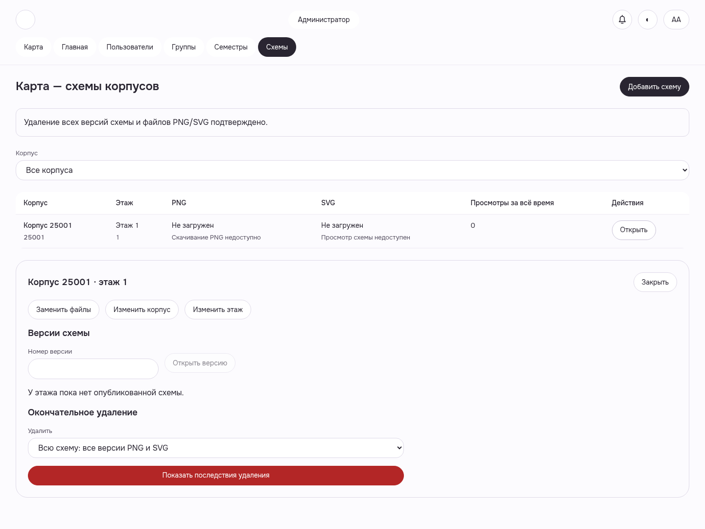

Полная история схемы удалена
Один реальный POST завершён; обе версии и четыре PNG/SVG больше не доступны. Корпус и этаж сохранены.
WEB-ADMIN-MAPS__whole-history-deleted__light__1440__10d8b908a · light · 1440 · revision10d8b908a

Настоящий Auth/Academic/Gateway, искусственная схема25001/1. Один delete200, две версии/четыре assets404; корпус/этаж/usage/high-water/receipt сохранены. Успешное удаление не повторялось; main950 не обновлялся, общий health не PASS.
Manifest · Все галереи · Приёмка и ограничения
Один реальный POST завершён; обе версии и четыре PNG/SVG больше не доступны. Корпус и этаж сохранены.
WEB-ADMIN-MAPS__whole-history-deleted__light__1440__10d8b908a · light · 1440 · revision10d8b908a
